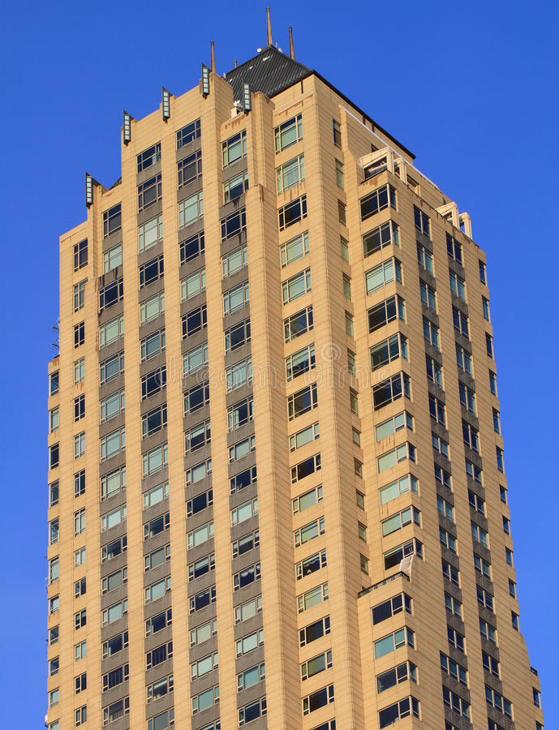

Welcome to Architektur
BTU Cottbus-Senftenberg: Aufbau und Inhalt des Studiums : Studiengang Architektur (B.Sc.)
2020.12.13 11:09
DE EN × Startseite Details Aufbau und Inhalt des Studiums Ziel des Studiums Berufsperspektiven Film zum Studiengang Ordnungen Formulare Ersti-Guide Modulhandbuch Studierendenservice Kontakt
Zielgruppen
Studieninteressierte Internationale Studieninteressierte Studierende Alumni BeschäftigteQuerverweise
Stellenangebote Lehrangebote eLearning Bibliothek IT- und Medienservices Campuspläne Mensapläne Webmail BTU auf einen Blick DE EN Querverweise Studieninteressierte Internationale Studieninteressierte Studierende Alumni Beschäftigte Stellenangebote Lehrangebote eLearning Bibliothek IT- und Medienservices Campuspläne Mensapläne Webmail Startseite Schließen Universität Über uns Leitung Karriere Organisation Gremien & Vertretungen Fakultäten & Einrichtungen Strukturwandel Lausitz Netzwerke & Partnerinstitute Presse Stiften & Fördern Forschung Forschungsprofil Graduate Research School (GRS) DFG-Graduiertenkolleg Graduiertenkolleg Gesundheits- und Sozialberufe Forschung aktuell Forschungskooperationen Forschungsservice Wissenschaftlicher Nachwuchs Technologie & Innovation Kontakte Studium Orientierung & Beratung Studienangebot Bewerbung & Zulassung Immatrikulation & Studienstart College Im Studium Nach dem Studium International Aktuelles Internationales Profil Internationalisierung Internationale Studieninteressierte Internationale Studierende Internationale Wissenschaftler Incoming Exchange Outgoing Exchange Internationale Alumni Fremdsprachen lernen Informationen für Geflüchtete Kontakte Weiterbildung Profil Online-Angebote Für Unternehmen und Institutionen Für Fach- und Führungskräfte Für Beschäftigte der BTU Offene Hochschule Fachlicher Austausch Integrative Qualifizierung BB Weiterbildungsangebote Frequently Asked Questions Wirtschaft Transferprojekt Innovative Hochschule Präsenzstellen der Hochschulen Technologie & Innovation Patente & Lizenzen Gründungsservice Duales Studium Strukturiertes Werkstudierendenprogramm Weiterbildung Career Center Alumni Veranstaltungskalender Unileben Überblick Kultur & Freizeit Campusleben Wohnen & Kosten BTU Highlights Soziale Netzwerke Kinder & Schüler Sport Gesundheitsmanagement Diversity Familie Dual Career Service Umweltmanagement Fakultät 6Studiengang Architektur Bachelor of Science (B.Sc.), universitär
Startseite Details Aufbau und Inhalt des Studiums Ziel des Studiums Berufsperspektiven Film zum Studiengang Ordnungen Formulare Ersti-Guide Modulhandbuch Studierendenservice Kontakt Architektur, B.Sc. Details Aufbau und Inhalt des Studiums Aktive Seite ist 1: Aufbau und Inhalt des Studiums 2: Ziel des Studiums 3: Berufsperspektiven 4: Film zum Studiengang 5: Ordnungen 6: Formulare 7: Ersti-Guide 8: Modulhandbuch 9: StudierendenserviceAufbau und Inhalt des Studiums
Die Ateliers der Architektinnen an der BTU Cottbus bieten Platz zum Arbeiten und Präsentieren von Entwürfen.Das Bachelor-Studium der Architektur an der BTU Cottbus-Senftenberg vermittelt in 6 Semestern erste entwurflich-praktische und wissenschaftlich-theoretische Fähigkeiten und Kenntnisse über Architektur. Darüber hinaus werden notwendige Schlüsselqualifikationen wie Teamfähigkeit, Präsentationstechniken und freie Rede einstudiert. Die Studierenden werden befähigt, unter Anleitung, übliche Aufgaben der Architekturpraxis und der Forschung zu bearbeiten.
Das Bachelor-Studium setzt sich aus Pflicht- und Wahlpflichtmodulen zusammen, die in folgende Modulbereiche gegliedert sind:
Geschichte und Theorie (Stadt- und Baugeschichte, Bauforschung und Denkmalpflege, Struktur- und Tragverhalten historischer Bauten, Bau- und Kunstgeschichte, Theorie und Geschichte des Wohnens, Conservation / Building in Existing Fabric) Bautechnik (Baustoffe, Tragkonstruktionen, Bauphysik, Baukonstruktion, Technische Ausrüstung, Gebäudetechnik, Sondergebiete Bauwerk/Konstruktion/Gebäudetechnik) Künste, Darstellung und Gestaltung (Zeichnen und Malen, Plastisches Gestalten, CAD, Darstellungslehre/Visualisierung, Vertiefung Kunst) Ökonomie und Recht (Grundlagen der Bauausführung und der Bauplanung, angewandte Planungs- und Bauökonomie) Städtebau (Grundlagen, Stadt und Architektur, Landschaft in der Stadt) Entwerfen (Grundlagen des Raums, Grundriss, Schnitt und Ansicht, Material und Herstellung, Stadt-Nutzung und Sozialraum, Entwurfsmethoden und Modellbau, Innenraumgestaltung, Ausstellungsgestaltung) Gebäudekunde, Grundlagen des Entwerfens Workshops und Exkursionen Fachübergreifende Studium Projekt Entwerfen und Gestalten Bachelor-Abschlussarbeit (ein Entwurf, der technisch oder städtebaulich vertieft wird)Der detaillierte Modulkatalog mit Pflicht- und Wahlfächern, sowie deren Verteilung auf die Semester kann unter den Folgenden Links heruntergeladen werden:
Modulkatalog und Regelstudienpläne Bachelor Architektur Modulkatalog und Regelstudienpläne Double Degree (in Kooperatin mit PWSZ Nysa)Neben den klassischen Lehrmethoden wie Vorlesung und Seminar ist die Projektarbeit in Ateliers wesentliche Lehrform des Architekturstudiums. Die Studierenden lernen, begleitet von den Lehrenden, praxisorientierte Aufgabenstellungen schrittweise und zielgerichtet zu lösen, sowie entwurfstechnisch verständlich in Form von Plänen, Grundrissen, Schnitten, Ansichten und dreidimensional als Modell zu denken und darzustellen. Die Kenntnisse werden in Workshops und Exkursionen vertieft.
Kontakt Impressum Datenschutz Barrierefreiheit Facebook Instagram Twitter Youtube LinkedIn XING Letzte Änderung: 12. Dezember 2018Hinweis zu Cookies
Unsere Webseite verwendet Cookies. Diese haben zwei Funktionen: Zum einen sind sie erforderlich für die grundlegende Funktionalität unserer Website. Zum anderen können wir mit Hilfe der Cookies unsere Inhalte für Sie immer weiter verbessern. Hierzu werden pseudonymisierte Daten von Website-Besuchern gesammelt und ausgewertet. Das Einverständnis in die Verwendung der technisch nicht notwendigen Cookies können Sie jeder Zeit wiederrufen. Weitere Informationen erhalten Sie auf unseren Seiten zum Datenschutz .
Einstellungen Erforderliche Cookies akzeptieren Alle Cookies akzeptieren Einstellungen speichern ×